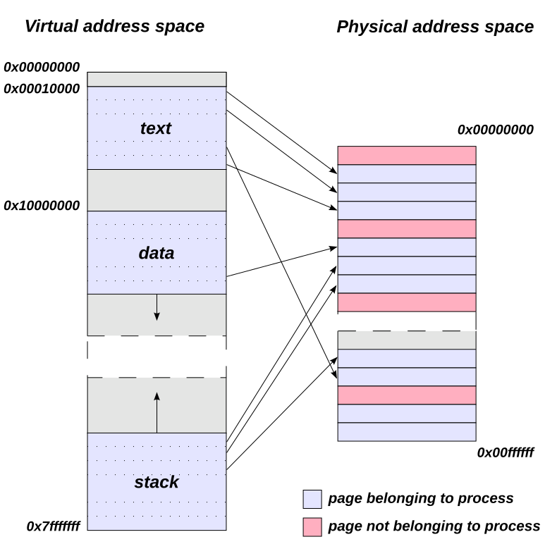
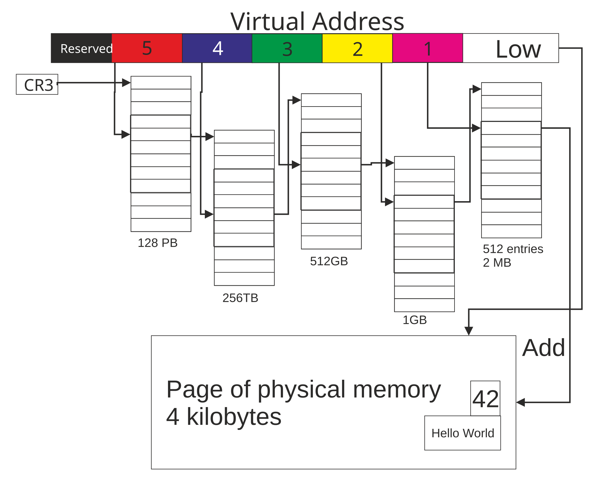
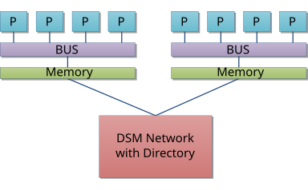

Translate an address
Walk x86-64 paging and RISC-V Sv39, then follow the request to DRAM and NUMA.
A process address map and its physical backing
- Program imageExecutable code, read-only constants and writable data from the loaded image.
- Heap and anonymous mappingsAllocator arenas and other anonymous virtual regions.
- File mappingsShared libraries or file-backed regions created by mmap.
- Stacks and gapsThread stacks, guard regions and unmapped addresses.
These are categories, not a fixed address order. ASLR, the loader and the OS decide actual placement.
On Linux, a VMA describes a contiguous virtual range and its policy, including permissions and backing. A page-table entry describes one active hardware mapping or the state used to resolve it. One VMA can contain many pages, some not yet resident. Contiguous virtual pages can map to noncontiguous physical frames. Two address spaces can also map the same frame at different virtual addresses.

Read from left to right. Each arrow connects one virtual page to its backing frame. The addresses illustrate an example layout.
Dysprosia · SVG by Stannered · Wikimedia Commons · BSD 3-Clause · Unmodified SVG
From virtual address to physical address
- Virtual addressThe core computes the effective address.
- TLBA matching translation also supplies permission information.
- Page walk on missRead PTEs and validate permissions and format.
- Physical accessCombine the page number with the offset and access the hierarchy.
A TLB miss may be resolved by a walk. Invalid or unauthorized translations can cause a page fault.
| Aspect | x86-64 | RV64 Sv39 |
|---|---|---|
| 4 KiB pages | Four levels with 48-bit linear addresses, or five levels with LA57 on supported systems. Nine index bits per level. | Three levels with 39-bit virtual addresses and nine index bits per level. |
| Root and context | CR3 selects the root and can carry a PCID when enabled. | satp holds MODE, ASID and the root physical page number. |
| Large leaves | 2 MiB and, where supported, 1 GiB. | An aligned leaf at an upper level can map 2 MiB or 1 GiB. |
| Maintenance | INVLPG or other architecture-defined invalidation as appropriate. | SFENCE.VMA orders page-table updates with implicit translation reads and affects local translation caching as specified. |
For 0x40123456, Sv39 extracts VPN[2:0] = (1, 0, 0x123) and offset 0x456. A successful 4 KiB leaf with physical page number 0x81234 gives physical address 0x81234456. A valid page-table entry can still deny the requested read, write or execute. After changing a shared mapping, the OS coordinates invalidation on the other cores or harts that may retain it.
Walk Sv39 with real indices
- VPN[2]
0x001Bits 38–30 · root index - VPN[1]
0x000Bits 29–21 · middle index - VPN[0]
0x123Bits 20–12 · lowest index - Offset
0x456Bits 11–0 · unchanged in PA
Bits 63–39 copy bit 38. For an ordinary 4 KiB leaf the walker uses all three indices.
- Root tablesatp.PPN = 0x80000. Read root[1] at 0x80000008. It points to 0x80001000.
- Middle tableRead middle[0] at 0x80001000. It points to 0x80002000.
- Leaf tableRead leaf[0x123] at 0x80002918. The valid leaf supplies PPN 0x81234.
- Physical byteCombine PPN and offset. PA = 0x81234000 + 0x456 = 0x81234456.
Example assumes a permitted 4 KiB leaf. Each Sv39 table holds 512 eight-byte entries. The PTE address is table base + index × 8.
| Entry information | x86-64 | RISC-V Sv39 |
|---|---|---|
| Validity and access | P, R/W, U/S and XD/NX where enabled. Permissions can constrain access at multiple levels. | V, R, W, X and U, with further checks such as SUM and MXR. |
| Leaf or pointer | PT entries map 4 KiB pages. The PS bit at supported levels selects a larger leaf. | A valid PTE with R=W=X=0 points to the next table. A valid readable or executable entry can be a leaf. |
| Usage tracking | Accessed and Dirty bits record usage as specified. | A and D bits track accesses and writes. Update or fault behavior depends on the implemented mode. |

This LA57 illustration follows a 4 KiB leaf. Each table has 512 entries and each index consumes nine bits. Compare five table indices here with the three in Sv39 above. The high field marked Reserved represents bits 63–57 here. A canonical LA57 address copies bit 56 into all seven of those bits.
Bellezzasolo · Wikimedia Commons · CC BY-SA 4.0 · Unmodified SVG
What the OS does when a mapping changes
- mmapRecord an allowed virtual range in a VMA. The backing frames can be allocated later.
- First writeAn absent translation faults. The handler checks the address and write permission against the VMA.
- PopulateAllocate and zero the backing frame as needed, then install a valid PTE.
- RetryThe faulting instruction can retry. An invalid access may instead be reported to the process.
This example follows a valid first write. File-backed faults may instead obtain a page through the page cache.
VA 0x4000PA 0x81001000VA 0x4000PA 0x81001000VA 0x4000PA 0x81002000A and B have separate page tables. Before the write both refer to the same backing page. After the copy, A keeps its old mapping and B sees its private copy.
After fork, private writable mappings can share backing with writes blocked in their page-table entries. If B writes while the page is still shared, the OS handles the fault, copies the page and updates B’s mapping. A permission fault is therefore sometimes part of normal memory management.
- Update PTERemove the mapping or lower its permissions.
- InvalidateInvalidate locally and coordinate relevant remote cores or harts.
- CompleteOnce stale access is ruled out and references are gone, the old frame can be reused.
PCID and ASID label translation contexts. A changed mapping can still require a TLB shootdown on other CPUs.
DRAM, bandwidth and NUMA
A DRAM controller maps addresses across channels, ranks, banks and rows. Activating a row loads it into a row buffer, so accesses to an open row can cost less than switching rows. Banks and channels enable overlap. Refresh, controller queues and read/write turnarounds affect latency under load.
Latency is the time for one request. Bandwidth measures sustained data transfer and benefits from parallel requests. On a NUMA machine, placement determines which memory controller serves a page, and a remote node adds fabric traffic. Measure placement and access pattern along with throughput.

Compare a CPU accessing the Memory box on its own node with an access that crosses the network to another node. A larger system can have more capacity without uniform access costs.
Moop2000 · Wikimedia Commons · Public domain · Unmodified SVG